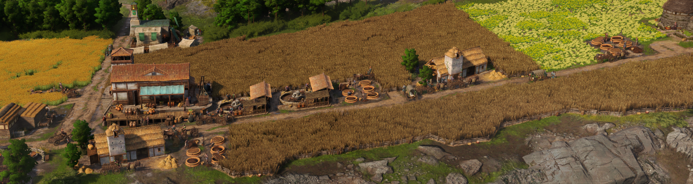

Fertiliser

Fertiliser serves as a replacement system for both aqueducts boosting farm/plantations, and the Ceres extra fields buff. By building a fertiliser silo near a Celtic farm and supplying it with fertiliser it boosts the farm productivity by 100%. While this isn't as strong as the combined 125% of Ceres fields + aqueduct, it's more space efficient, since a silo only adds 6 tiles instead of the 40-70 tiles the extra fields would require.
Fertiliser is output as an extra good by ochs farms but can also be produced in marshes by the fertiliser pit.
The fertiliser good, the ochs extra output buff, and fertiliser silos are unlocked at 4000 Epona devotion along with regular animal silos.
Going below 3500 Epona devotion will remove the ability to build new fertiliser silos and fertiliser pits, and disable the ochs additional output buff. Existing silos and pits will continue to function. This is the same behaviour as the base game when unlocks are lost from losing devotion.
Historical Limitation due to Bug
Before mod version 0.9.2 the fertiliser silo buff was based on street distance due to a bug in the base game. At the time silo buffs would fail to reapply on loading a saved game.
If you have updated from a pre 0.9.2 version of the mod you may need to pause and unpause all silos to refresh the buff to the new version. You will only need to do this once and you can do this for all fertiliser silos on an island at the same time by holding shift when clicking pause.